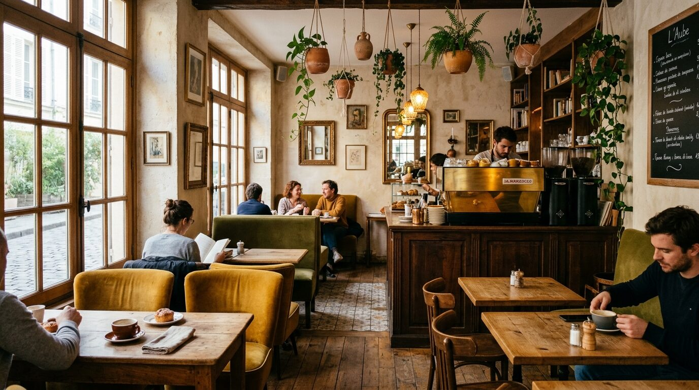
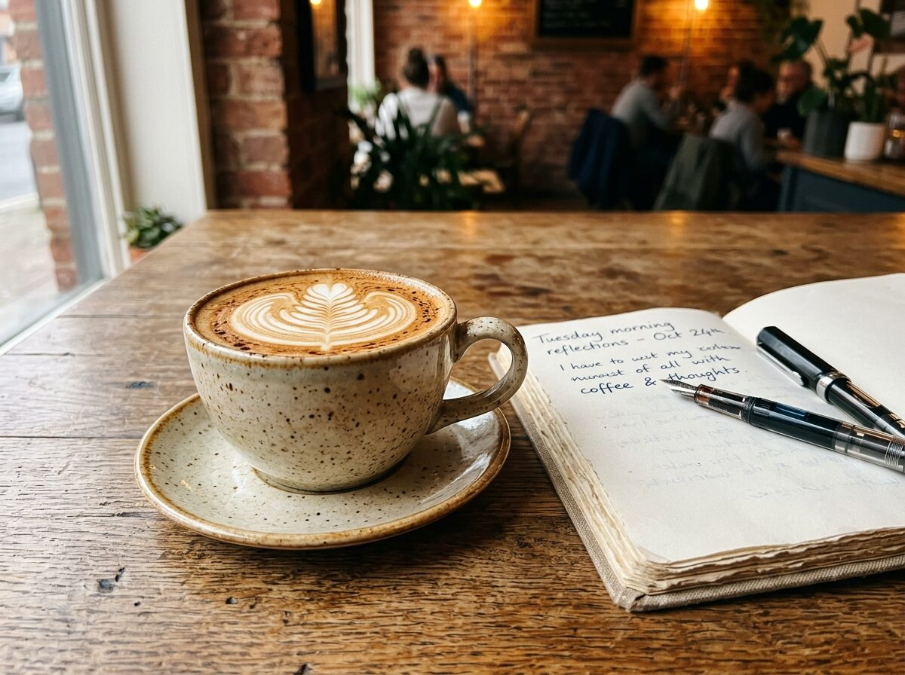
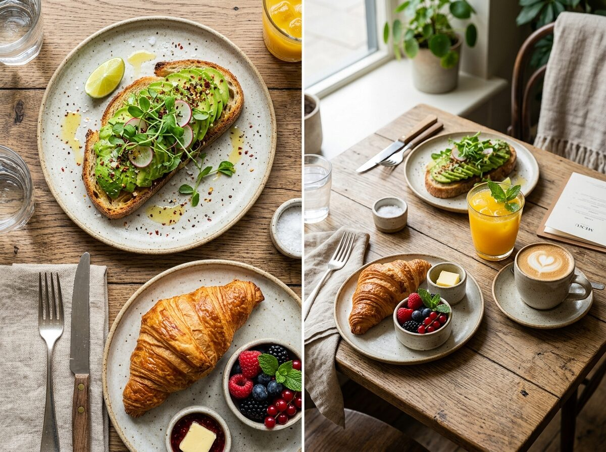
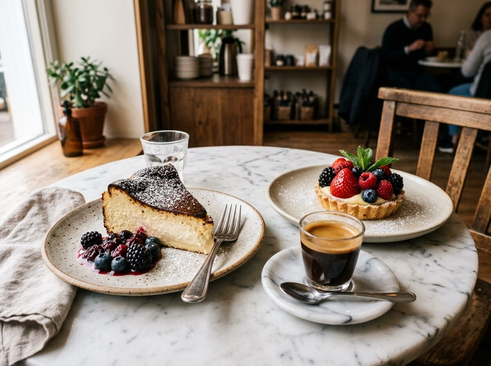
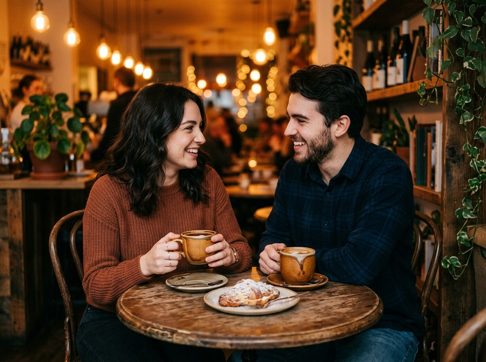
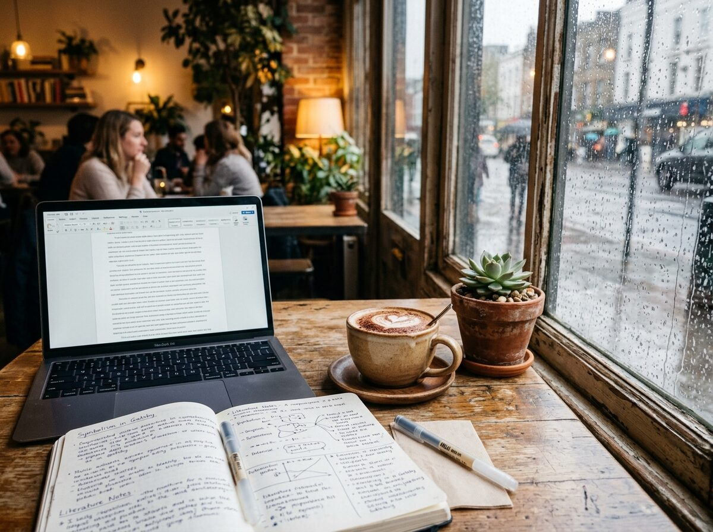
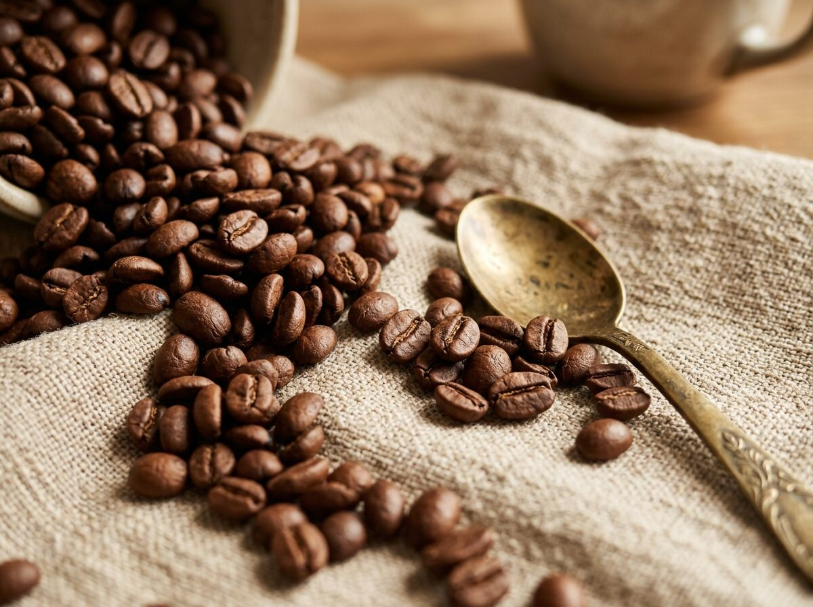
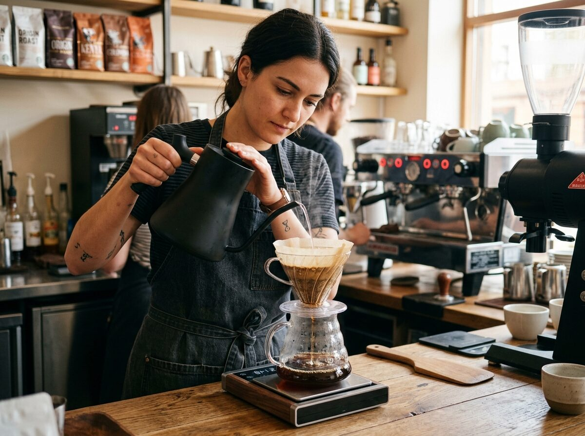

A Guide to Different Types of Cafes
From third-wave Scandinavian roasters and historic Viennese salons to tranquil Japanese kissaten, explore the distinctive personalities, brew philosophies, and cultural histories behind modern coffee houses.
Discover Cafes. Sip Slowly. Live Fully.
From the nuances of single-origin beans and artisanal pastries to quiet corner tables and mindful slow living, explore stories crafted for coffee enthusiasts, students, and curious palates.

From third-wave Scandinavian roasters and historic Viennese salons to tranquil Japanese kissaten, explore the distinctive personalities, brew philosophies, and cultural histories behind modern coffee houses.

Demystify the chalkboard menu. Learn the exact espresso-to-milk ratios and textures of flat whites, lattes, and cortados.

Elevate your breakfast and lunch with wild-fermented sourdough avocado toasts, baked skillet shakshuka, and gourmet melts.

Master the delicate art of pairing scorched Basque cheesecake, tiramisu, and tarts with coffee roasts.

Discover why coffee dates excel, and how to spot cozy corner nooks, amber lighting, and romantic ambience.

Find your productivity sanctuary: assessing Wi-Fi speeds, power outlets, ergonomic tables, and etiquette.

Learn Arabica vs Robusta botany, processing methods, and how roasting levels define aroma and flavor.
Capture stunning coffee scenes using natural 45-degree side window lighting and thoughtful flatlay props.

Master the unspoken social pact of third spaces: tipping, table duration, audio hygiene, and clearing dishes.
Taking inspiration from the editorial organization of Sprudge and Perfect Daily Grind and the neighborhood discovery approach of The Infatuation, we review coffee beans, cafe dishes, and third spaces with curiosity and warmth.
Read Our Full Story & Editorial Ethics →